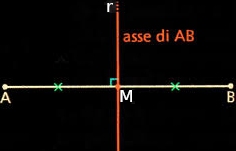
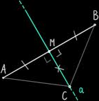

I luoghi geometrici
Definizione 5.1.1 Il luogo geometrico identifica l’insieme costituito da tutti e soli i punti del piano (o dello spazio) che soddisfano una data proprietà Ƥ, detta proprietà caratteristica del luogo. □
Per poter affermare che una figura è un luogo geometrico occorre dimostrare che
tutti i punti godono della stessa proprietà caratteristica;
solo i punti della figura godono di quella proprietà
Studiamo alcuni esemi di luoghi geometrici.
L'asse di un segmento
L’asse di un segmento, è la retta perpendicolare al segmento, passante per il suo punto medio. Vale il seguente teorema.
Teorema 5.1.1. L'asse di un segmento è il luogo dei punti del piano equidistanti dagli estremi del segmento.
Dim. Tutti i punti dell'asse sono equidistanti dagli estremi:
Ipotesi: CM ⊥ AB.
Tesi AC ≅ CB.
Dobbiamo dimostrare che, se un punto C appartiene all'asse a del segmento AB, allora è equidistante da A e B.
I triangoli rettangoli AMC e BMC hanno:
AM ≅ MB perché M è punto medio di AB;
MC in comune.
Sono perciò congruenti per il primo criterio di congruenza dei triangoli rettangoli.
In particolare, AC ≅ BC, quindi le distanze di C da A e B sono uguali.
Solo i punti dell'asse sono equidistanti dagli estremi: Dobbiamo dimostrate che, se un punto C è equidistante da A e B, allora appartiene all'asse del segmento AB. Dal punto C tracciamo la perpendicolare CH ad AB.
I triangoli rettangoli AMC e BMC hanno:
AC ≅ CB perché C è equidistante da A e B;
MC in comune.
Sono perciò congurenti per il quarto criterio di congruenza dei triangoli rettangoli.
In particolare, AM ≅ MB. La retta CM è perpendicolare al segmento AB e passa per il suo punto medio, quindi C appartiene all'asse di AB. □
La bisettrice di un angolo
Teorema 5.1.2. La bisettrice di un angolo è il luogo geometrico dei punti equidistanti dai lati dell'angolo.
Dim. Tutti i punti della bisettrice sono equidistanti dai lati.
Ipotesi. 1. QV̂P ≌ PV̂R. 2. PQ ⊥ VQ 3. PR ⊥ VR
Tesi. PH ≌ PR.
Dobbiamo dimostrare che, se un punto P appartiene alla bisettrice, allora è equidistante dai lati.
Individuiamo sui lati i punti Q e R tali che PQ e PR siano le distanze del punto P dai due lati.
I triangolo rettangoli PVQ e PVR hanno:
PV in comune;
QV̂P ≌ PV̂R perché PV è la bisettrice di QV̂R.
Sono perciò congruenti per il terzo criterio di congruenza dei triangoli rettangoli. In particolare, PQ ≌ PR.
P è allora equidistante da VQ e VR
Solo i punti della bisettrice sono equidistanti dai lati. Doabbiamo dimostrare che, se un punto P è equidistante dai lati, allora appartiene alla bisettrice.
I triangoli rettangoli PVQ e PVR hanno:
PV in comune;
PQ ≌ PR per ipotesi.
Sono perciò congruenti per il quarto criterio di congruenza dei triangoli rettangoli. In particolare QV̂P ≌ PV̂R.
P è allora un punto appartenente alla bisettrice. □
La circonferenza è un altro esempio di luogo geometrico.